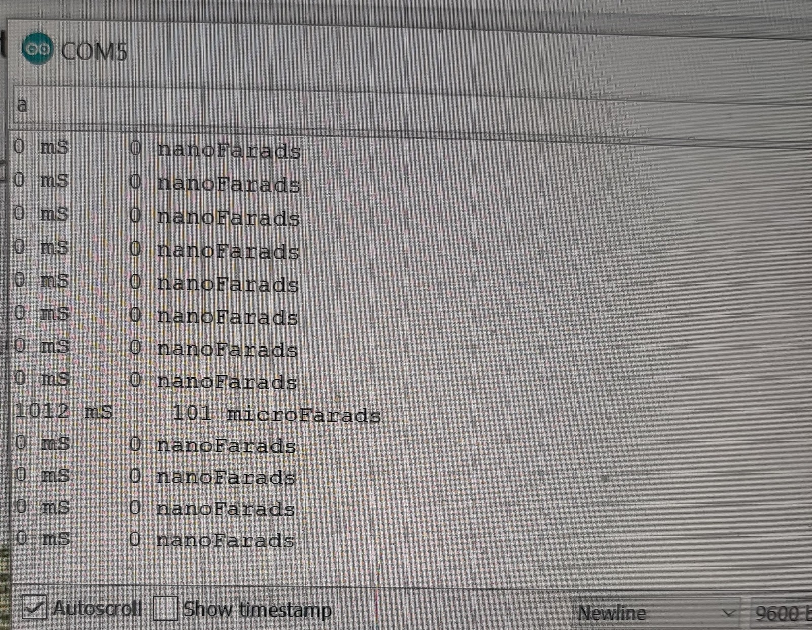
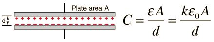

This week we explore various input devices and sensors with Arduino. To start out, I decided to try working with a photoresistor, and measure brightness. Below you can see a diagram for the photoresistor circuit, which includes a 10k resistor in series with the photoresistor to prevent very high current load on the sensor. After assembling the circuit we must test it. For this we need to plot the value of the sensor and have a light source as the external input, for which I used my phone flashlight. While measuring the value I would move the flashlight closer and further from the photoresistor to calibrate the values. We see that it goes down to 0 and up to around 800, spanning almost the full 1024 range, but unable to hit the highest values because of the voltage drop across the added resistance. We also see the the values spike very rapidly, only increasing substantially when the light source is right against the photoresistor. This tells us that if we want more granularity in the measurements and focus on lower values we might want to put this photoresistor in parallel with a different resistor, so the swings in higher resistances (when there's less light) make more difference.

For the second part of the assignment we needed to make our own sensor. For this I wanted to do some sort of sensor related to capacitance, and make use of the copper pads. One interesting sensor could be a capacitive touch screen based on pressure, similar to the old touch screens you see that you have to push on to activate. Before getting into that, I needed to design a capacitance reading device using the arduino, and gound a great guide online. The code simply sends a HIGH signal to the capacitor and times how long it takes for the voltage reading to reach a certain level, and extrapolates that information to calculate the capacitance. The circuit for this measurement device is shown below. After assembling it and uploading the code, we had to make sure it worked so I tested it on a number of capacitors included in the kit and found it to be pretty accurate, getting a reading around 109uF for a 100uF capacitor.
Now instead of a capacitor I hooked up the copper pads and put them on each other, but ended up getting a reading of 0. I expected a non-zero reading, but figured that the capacitance was just too small to be picked up, and would only be picked up when there are very very small distances between the pads. That's because the capacitance of a parallel plate capacitor is proportional to 1/d, so as the distance approaches 0, the capacitance goes to infinity. Hence I tried just pushing very hard on the pads and as expected, the capacitance would become huge since my finger would decrease the distance between pads by so much. It is odd that the capacitance wasn't zero when my finger pressed down on it, since the copper plates should be touching and conducting electricity without needing to breach a gap.
